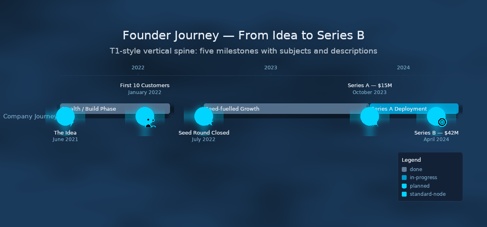
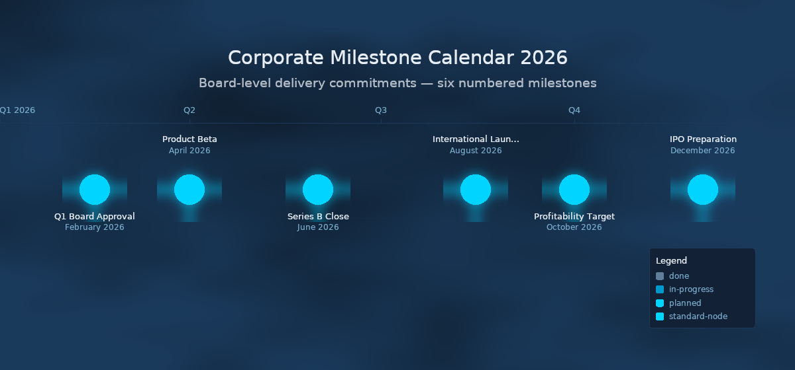
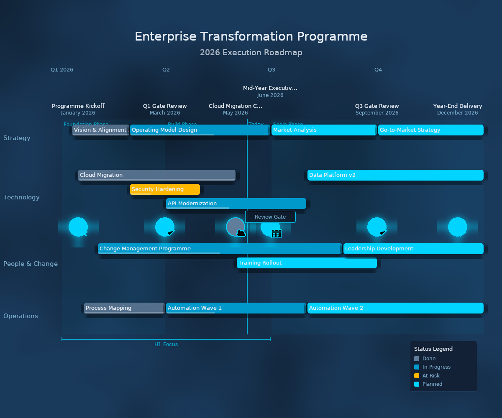
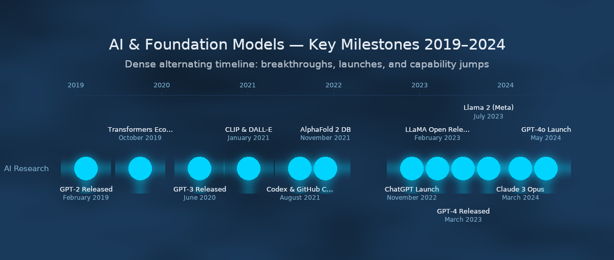

Phase 4 art-effects rendered via the Skia raster backend (canvaskit-wasm) with the Showcase Tier-3 theme. Featuring a dark navy palette, procedural cloud/noise backgrounds, cyan-glow milestone nodes, and soft-shadowed event cards. The SVG backend remains the deterministic default; Skia is byte-deterministic per pinned canvaskit-wasm version.
Glow (nodes)
MaskFilter blur halo in cyan (#00D4FF) at radius 18. Rendered as a blurred ghost below each milestone node.
Drop Shadow (cards)
Offset (4, 6) blurred copy at blur=10. Gives depth to event cards in vertical-spine layout.
Cloud Background
Procedural two-octave value-noise SkSL shader blending #0D1B2A ↔ #1A3A5C. Deterministic fixed-seed turbulence.
Light typography
Off-white labels on dark navy. Accent lines and node strokes in cyan for visual hierarchy.



